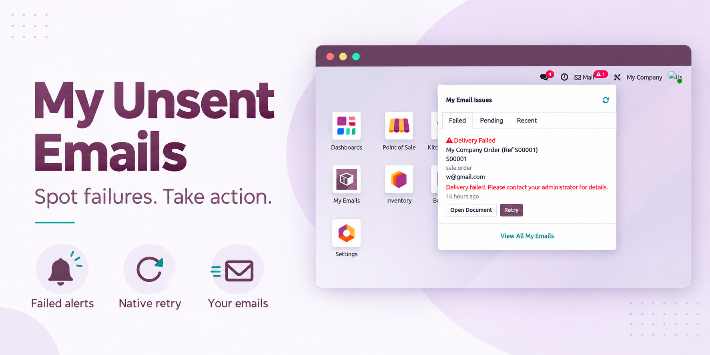
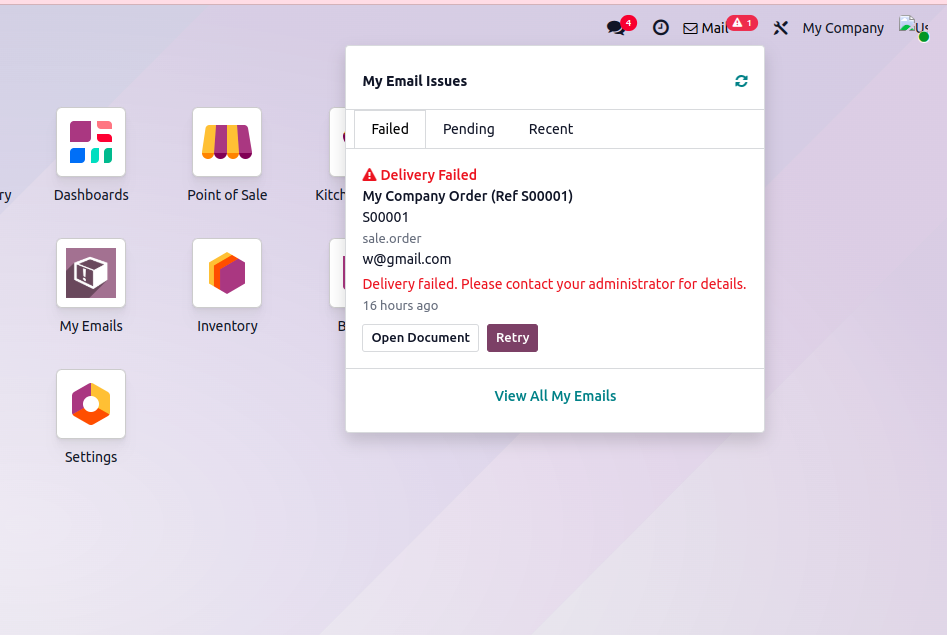
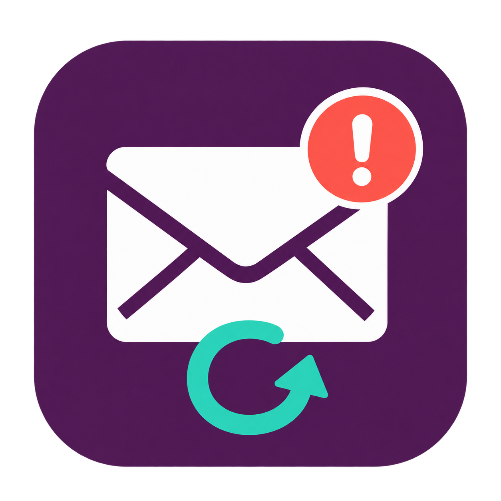

Find failed outgoing emails, review pending messages, and retry from the Odoo systray.
Give internal users a personal email control center without navigating technical settings.
A badge counts failed emails requiring your attention.
Open the source document or queue the failed email for retry.
Use Recent to see successful sends tracked by the module.
FROM THE ACTUAL INTERFACE
Click Mail in the top bar to see the failed message, recipient, source document, queue age, and a safe failure description.
Open the original sales order to investigate, or use Retry to place the existing email back in Odoo's outgoing queue.
Designed for everyday users
No developer mode needed for the Email Center.

Actual screenshot supplied for this module. Appearance may vary by Odoo edition and theme.
THREE FOCUSED VIEWS
See your failed queue items with subject, recipients, document details, and a safe error category.
Retry · Open Document
Find emails waiting to send, check their age, and see the scheduled send date when available.
Send Now · Open Document
See up to ten successful emails from the last seven days, tracked after the module is installed.
A lightweight confirmation history
The warning badge counts failures, not your entire email history. No warning badge appears when the failed count is zero.
Uses Odoo's own queue and delivery methods. Retry queues the message; Send Now requests delivery under native sending limits.
Open the related quotation, invoice, purchase order, or other linked document when it exists and you have access.
Search subjects and recipients. Filter Failed, Pending, Sent, Today, or Last 7 Days in a familiar Odoo backend list.
Responsibility, allowed companies, and current source-document access determine what each internal user can see.
Limited dropdown results and a conservative 60-second refresh while the page is visible. Email bodies and attachments are not displayed.
01
Open the top-bar dropdown when a failed-email badge appears.
02
Investigate the source document and queue the existing failed email for retry.
03
Follow the queue status and review a successful send once delivery processing completes.
Install the module on an Odoo 19 server that supports custom addons. Your existing outgoing email configuration continues to handle delivery.
Internal users can access the Mail systray and My Emails menu after the backend is reloaded.
| Odoo version | 19.0 |
|---|---|
| Framework | Community mail and web APIs; designed for Community and Enterprise. Screenshot shows Enterprise. |
| Users | Internal users, with personal ownership and company restrictions |
| Dependencies | mail, web |
| Hosting | Odoo.sh or self-hosted installations supporting custom modules; not standard Odoo Online |
| Email server | Uses your existing Odoo outgoing mail configuration |
Responsibility follows the native message author when that author maps to one active internal user. Authorless messages may use the internal message creator. Automated messages can belong to a service account rather than the person who originally triggered a workflow.
Retry requeues the existing failed email. Send Now is available in Pending and uses native delivery. Neither action fixes SMTP credentials or guarantees inbox delivery.
Native cleanup remains unchanged. If a failed queue item was removed, its metadata can remain visible, but Retry is unavailable. Open the source document to send a new email. Inaccessible or deleted source documents are hidden.
Native partner recipients use their current email at delivery. Static recipient addresses and generated message content are not regenerated by Retry; send a new email when those need to change.
The Email Center displays metadata only. It does not show email bodies, attachments, or raw SMTP exceptions. Existing access rules still govern source documents.
Mass mailing campaigns, team-wide monitoring, later bounces, per-recipient partial failures, and messages scheduled before they enter the outgoing queue. Recent indicates a native sent state, not confirmed inbox delivery.

A focused email failure and retry center for Odoo 19.
Support:erpmitchellodoo@gmail.com